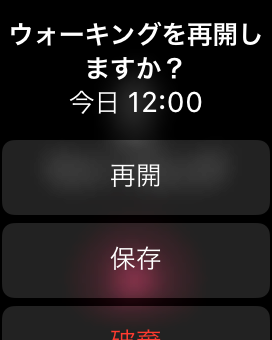

Watchアプリの起動もできない場合は、アプリが正常にインストールできていない可能性が高いです。
Watchアプリの再インストール、Apple Watch/iPhoneの再起動 をお試しください。
頻繁に発生する場合は、Apple Watch/iPhoneの再起動をお試しください。
また、アプリが落ちてしまった後は、「復帰して再開」をご利用ください。
原因は引き続き調査中ですが、Zonesアプリが原因でない事例を多く確認しています。
考えられる原因は、Apple Watch もしくは Apple Healthの不調や、watchOSの不具合 になります。
もし、アプリが突然終了する現象に再現性があるようでしたら、設定 > サポート > フィードバック よりメールで詳細をご連絡頂けるととても助かります！
Apple Watch本体が不安定になっている可能性もありますので、再起動をお試しください。
ワークアウトを開始中にアプリが突然終了してしまった後、アプリを起動すると再開が可能です。(Zones ver 1.3.0 より)
アプリ終了後から1時間以内の場合は、自動的に再開します。
1時間以上経過していた場合は、以下が表示されます。

再開ボタンはアプリ終了後から2時間以内のときのみ表示されます。
表示されている時間は、ワークアウトの開始時間です。
アプリをDockに入れると、アプリが突然終了してもApple Watch本体が自動的にアプリを起動します。
そのため、Dockにいれることにより、心拍数などの詳細データをより逃さず記録できる可能性があります。